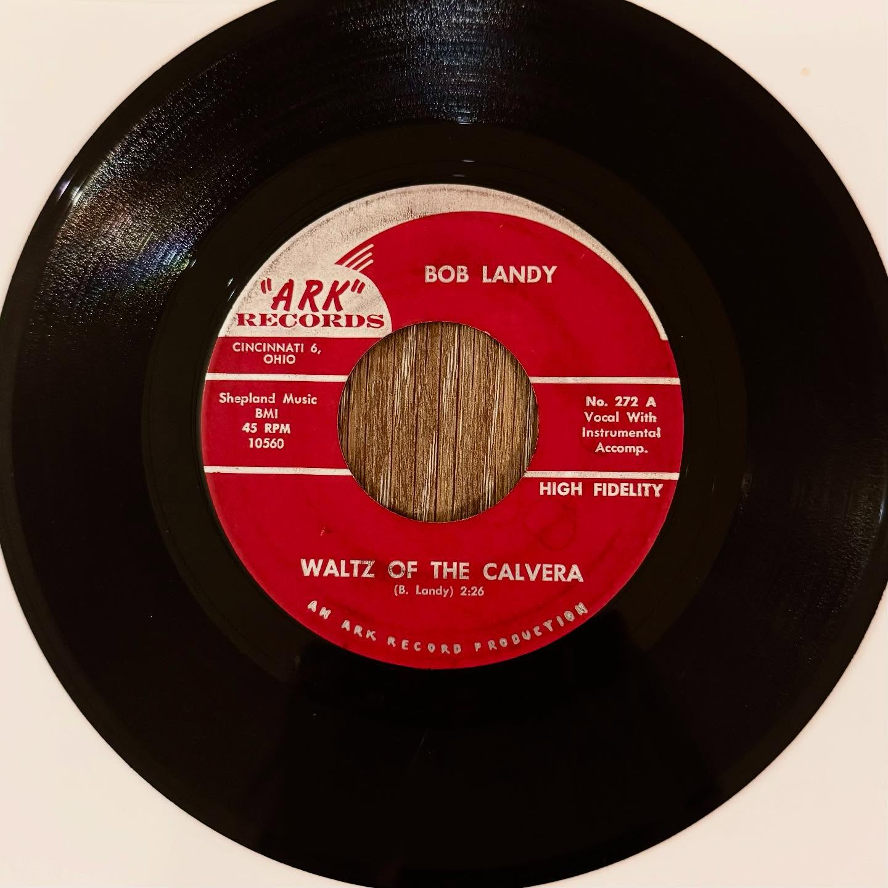

Bob Landy
Ball Room Was Empty / Waltz of the Calvera
photo unavailable? open original Instagram post



record information
- artist
- Bob Landy
- a-side
- Ball Room Was Empty
- b-side
- Waltz of the Calvera
- label
- Ark
- catalog no.
- 272
- year / pressing
- 1963
research / notes
Bob Landy's 1963 Cincinnati pressing is documented on Ark 272 with “Ball Room Was Empty” and “Waltz of the Calvera” (RITE matrix numbers 10559/10560). The caption specifically says this Ark release is his only record, supporting the identification.
original collection notes
I always like picking up a record from the Ark Records label when I come across one. This is the only record Bob Landy ever made, which is a shame because I really love his lush, deep voice. It has the same smooth, emotional quality that reminds me of Lefty Frizzell. A great country ballad.
posted · no. 016